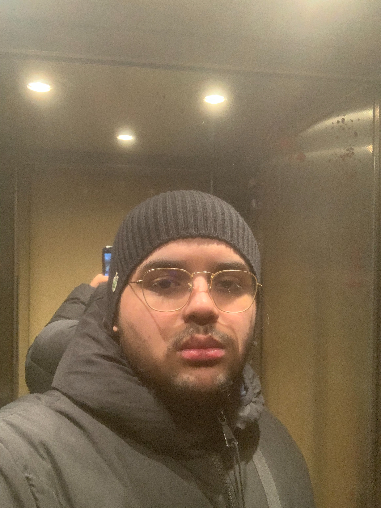

Hello !
My name is Rayan Alitouche, I'm 19, I live in Suresnes, studying at EMLV. I am a former footballer with wasted talent, a hidden rapper with high potential but above all a very great man of the trade.
LE WAGONMusic 🎵
There is nothing that speaks to my soul quite like the power of a great song. From the beat to the lyrics, every element of a good tune has the ability to transport me to another world and stir up emotions that I never knew existed.
Food 🍔
As an adolescent with a deep love for food, I can confidently say that there is nothing in the world that brings me more joy than a delicious meal. From savory pasta dishes to sweet desserts, I am constantly on the hunt for new and exciting flavors.
Football ⚽
Football has almost always been part of my life. When I was little, I was passionate about the great players on TV of which I was a fan, such as Zizou for example. I also play a lot of football in clubs or with friends.